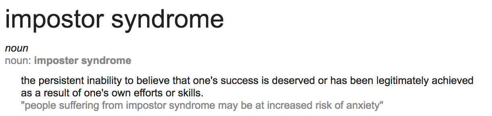

Building on the Accelerator
Me rambling with sprinkles of advice
Art Eidukas, Data Science Campus (ONS)
@finnkauski
Who am I?
- (2015/09) - AO Economist Sandwich Student
- (2016/05) - HEO Economist Researcher
- (2017/12) - HEO Data Scientist
- (2018/05) - SEO Data Scientist
- (2019/20) - G7 DevOps/Software Engineer
- (2021/---) - G7 Senior Data Scientist (?)
My project
-
Graduated October 2017
-
Price index and webscraping related
-
Text matching problem
I thought I had good code
I was wrong.
My feelings about the programme
-
Looking back motivates me
-
Using these tools is and will be getting easier
-
My work promoting python has had a genuine impact
"But what do I do now?"
Teaching people is a great way to learn!
(Not being able to answer questions is a great motivator 😏)
Find work!
-
Find small things in your immediate workspace and personal life that you could automate!
-
Work with friends on cool hobby projects (GTA, CyberPunk2077, webapp, photocompetition etc.)
-
Scout out areas in your department that you could help with
Someone struggling to make charts and production reports each month?

or Jinja in python
Someone needs to replicate an old system in a reproducible and flexible way?
or R
- `code_v1.py`
- `code_v2.py`
- `code_v2_FINAL.py`

But it's not Data Science™!
Maybe not, but it frees up time for people to think about more complex questions and lets you practice!
Take advantage of these things! It's both business relevant and good practice!
You can never know enough about pandas.
You forge how others perceive you!
Basically getting paid to learn and practiceKeep learning!
Not everyone will.
Not everyone who comes out the DSA will still have the desire to keep pursuing a career in this field.
If you are motivated, keep it going. See how far it will take you.
Keep learning!
-
Ask for development time.
-
One, two, three hours per week will do you wonders.
-
Don't get distracted
-
Find an outlet for your work
Last point is important! You won't get leverage to do development without showing that its useful.
My summarised resource page (python biased)
-
Hands On Machine Learning with Sci Kit learn and Keras (2nd ed.)
-
Books in general, Blogs, RealPython (awesome webpage <3), pydata, pycon
-
Take as much as you can from the lovely GovDataScience Slack community
-
Honestly, drop me a slack message if you need more info or advice. (@art_dsc)
Back in the day...

Note: if someone wants a virtual study sessions gimmie a shout
I am not advocating you going out of your way and working at home on things that you have to do at work.
But if you have genuine curiosity, foster it and keep doing mini projects at home. That will pay off!


More formally...
If you've decided to take it more formally please
contact
datasciencecampus@ons.gov.uk
We offer apprenticeships, in-house training and a
masters in
"Data Analytics for Government"
There is much more on offer in terms of support. Make sure to contact us for more information.
Shameless plug done!
😏
Case study 1
Katie Davidson was on first cohort of Accelerator at GDS.
Campus then sponsored her to do a part-time MSc in Data Science at Birkbeck, and she returned to accelerator as a mentor.
While studying she was promoted to Head of Data Science at Dept of Health and Social Care and set up her own data science team.
Case study 2
Bharath Vadhoola was on this programme
He looked at predicting pheonix companies
He was offered the role of principal Data Science at the Home Office
Promoting DS within your divisions
You will get challenged about this data science stuff
Be honest about what it can and cannot solve
Start small
Learn what 'good looks like' for projects
Share stories (positive and negative) of Data Science within your area
Also share and promote any work you do
-
Present your work!
-
Opensource your code (github etc)
-
Encourage and mentor others
-
Host show and tells
-
Coffee and Coding (check Slack channels)
Git & Github Portfolio
Use it as an artist to promote your own work and projects.
Learn it once, make your like easier forever.
PSA: Imposter syndrome
Summary of Caitlin Hudon's Blog
Data Science™, a fertile ground for imposter syndrome
-
Data Science™ is a new field
-
Data Science™ is a combination of other fields
-
Data Science™ is constantly expanding with new tech
How to deal with it?
-
We are ALL learning as we go! It's exciting! Acknowledge that!
-
Accept that you won't be able to learn EVERY area of Data Science™
-
Nobody will!
-
I was much more on the coding side, but not great at stats
How to deal with it?
-
You will know things nobody else does.
-
Get comfortable with "I don't know"
-
Don't `fake it 'til you make it`. Its stressful and harmful for development.
-
Don't compare yourself too much to others, compare yourself to who you were yesterday.